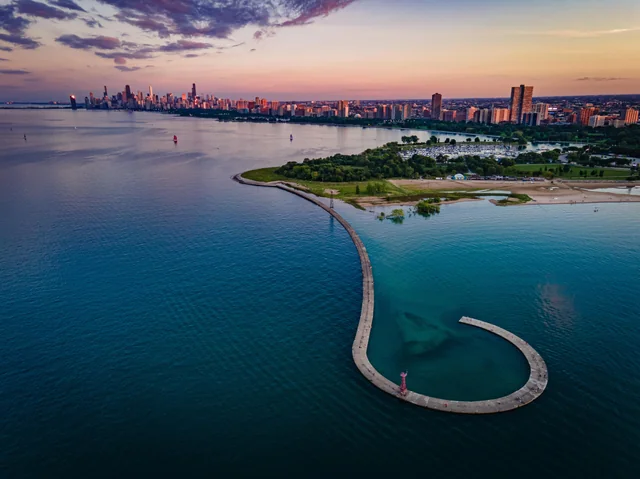

Discover the beauty of Montrose Beach, a lesser-known gem on Chicago's lakefront. Enjoy pristine sands, clear waters, and stunning views of Lake Michigan.
Tucked along Lake Michigan in Chicago's Uptown neighborhood, Montrose Beach is far more than just a place to sunbathe. This stretch of shoreline is home to a busy public beach, a historic boat harbor, a nationally recognized bird sanctuary, and a lively beachside restaurant — all within walking distance of each other. Whether you're looking to relax by the water, watch sailboats glide out of the harbor, spot a rare migratory bird, or grab a cocktail with your feet in the sand, Montrose Beach has something for every kind of visitor. Use the navigation menu above to explore everything this lakefront destination has to offer.